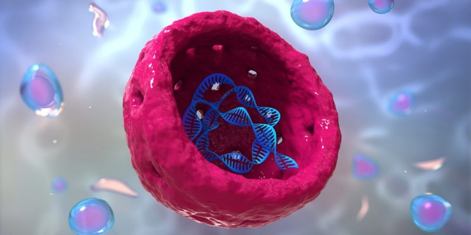
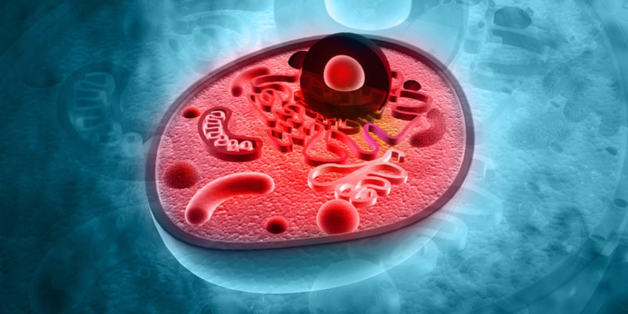
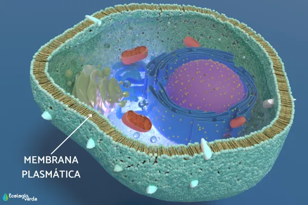
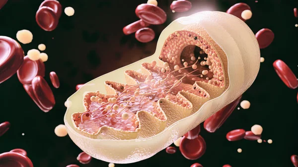
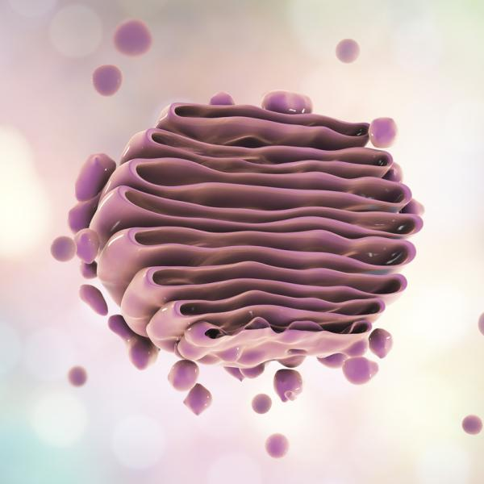
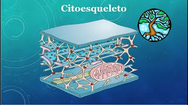

El Nucleo
Organelo de mayor tamaño. Dirige el metabolismo y la division celular asi como contiene el material genético.

Citoplasma
Medio interno de la celula en el transitan sustancias, en donde se encuentran todods los organelos y sustancias como el ARN, se encuentra delimitado por una membrana.

Membrana
Rodea y da forma ala celula, rica en lipidos y proteinas, regula la entrada y salida de nutrientes.
Las Mitocondrias.
Tiene un papel fundamental en el proceso de respiración celular,en el cualtransforman la energía química(glucosa) en ATP para sus funciones vitales,Se pueden replicar,sintetizan sus propias proteínas, además es capas de transcribir los tres tipos de ARN.

El aparato de Golgi.
Formado por unidades llamadas dictosomas o vesiculas entre sus funciones se encuentra;resive a los lipidos y proteínas para alamacenarlos, ensambla moleculas y forma vesículas como los lisosomas.

Citoesqueleto.
Le da forma y estructura a la celula,esta constituido por tres filamentos: Los Microtubulos son tubos de proteinas llamadas tubulinas alfa y tu bulinas beta,desempenan un papel fundamental en el movimiento de vesiculas y sustancias.luego estan los Microfilamentos formados por actina,desempenan el pael de la contraccion del citoplasma,es la fuerza propulsora de la Ciclosis y el movimiento ameboide.

Bibliografía
- Libro: Book Mart, S. A. de C. V. (2025). Organismos: estructuras y procesos. Herencia y evolución. Book Mart.